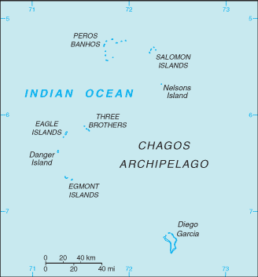
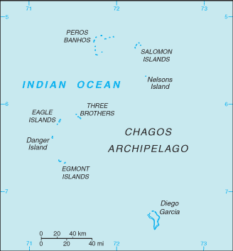

South Asia :: BRITISH INDIAN OCEAN TERRITORY
Introduction :: BRITISH INDIAN OCEAN TERRITORY
-
Formerly administered as part of the British Crown Colony of Mauritius, the British Indian Ocean Territory (BIOT) was established as an overseas territory of the UK in 1965. A number of the islands of the territory were later transferred to the Seychelles when it attained independence in 1976. Subsequently, BIOT has consisted only of the six main island groups comprising the Chagos Archipelago. Only Diego Garcia, the largest and most southerly of the islands, is inhabited. It contains a joint UK-US naval support facility and hosts one of four dedicated ground antennas (the others are on Ascension (Saint Helena, Ascension, and Tristan da Cunha), Kwajalein (Marshall Islands), and at Cape Canaveral, Florida (US)) that assist in the operation of the Global Positioning System (GPS) navigation system. The US Air Force also operates a telescope array on Diego Garcia as part of the Ground-Based Electro-Optical Deep Space Surveillance System (GEODSS) for tracking orbital debris, which can be a hazard to spacecraft and astronauts.Between 1967 and 1973, former agricultural workers, earlier residents in the islands, were relocated primarily to Mauritius, but also to the Seychelles. Negotiations between 1971 and 1982 resulted in the establishment of a trust fund by the British Government as compensation for the displaced islanders, known as Chagossians. Beginning in 1998, the islanders pursued a series of lawsuits against the British Government seeking further compensation and the right to return to the territory. In 2006 and 2007, British court rulings invalidated the immigration policies contained in the 2004 BIOT Constitution Order that had excluded the islanders from the archipelago, but upheld the special military status of Diego Garcia. In 2008, the House of Lords, as the final court of appeal in the UK, ruled in favor of the British Government by overturning the lower court rulings and finding no right of return for the Chagossians. In March 2015, the Permanent Court of Arbitration unanimously held that the marine protected area (MPA) that the UK declared around the Chagos Archipelago in April 2010 was in violation of the UN Convention on the Law of the Sea.
Geography :: BRITISH INDIAN OCEAN TERRITORY
-
archipelago in the Indian Ocean, south of India, about halfway between Africa and Indonesia6 00 S, 71 30 E; note - Diego Garcia 7 20 S, 72 25 EPolitical Map of the Worldtotal: 60 sq kmland: 60 sq km; Diego Garcia 44 sq kmwater: 54,340 sq kmnote: includes the entire Chagos Archipelago of 55 islandscountry comparison to the world: 230land area is about one-third the size of Washington, DC0 km698 kmterritorial sea: 12 nmEnvironment (Protection and Preservation) Zone: 200 nmtropical marine; hot, humid, moderated by trade windsflat and low (most areas do not exceed two m in elevation)mean elevation: NAelevation extremes: lowest point: Indian Ocean 0 mhighest point: ocean-side dunes on Diego Garcia 9 mcoconuts, fish, sugarcaneagricultural land: 0%arable land 0%; permanent crops 0%; permanent pasture 0%forest: 0%other: 100% (2011 est.)none; located outside routes of Indian Ocean cycloneswastewater discharge into the lagoon on Diego Garcianote 1: archipelago of 55 islands; Diego Garcia, the largest and southernmost island, occupies a strategic location in the central Indian Ocean; the island is the site of a joint US-UK military facilitynote 2: Diego Garcia is the only inhabited island of the BIOT and one of only two British territories where traffic drives on the right, the other being Gibraltar
People and Society :: BRITISH INDIAN OCEAN TERRITORY
-
no indigenous inhabitantsnote: approximately 1,200 former agricultural workers resident in the Chagos Archipelago, often referred to as Chagossians or Ilois, were relocated to Mauritius and the Seychelles in the 1960s and 1970s; approximately 3,000 UK and US military personnel and civilian contractors were living on the island of Diego Garcia
Government :: BRITISH INDIAN OCEAN TERRITORY
-
conventional long form: British Indian Ocean Territoryconventional short form: noneabbreviation: BIOTetymology: self-descriptive name specifying the territory's affiliation and locationoverseas territory of the UK; administered by a commissioner, resident in the Foreign and Commonwealth Office in Londonthe laws of the UK, where applicable, applychief of state: Queen ELIZABETH II (since 6 February 1952)head of government: Commissioner Dr. Peter HAYES (since 17 October 2012); Administrator John MCMANUS (since April 2011); note - both reside in the UK and are represented by the officer commanding British Forces on Diego Garciacabinet: NAelections/appointments: the monarchy is hereditary; commissioner and administrator appointed by the monarchnone (overseas territory of the UK)none (overseas territory of the UK)white with six blue wavy horizontal stripes; the flag of the UK is in the upper hoist-side quadrant; the striped section bears a palm tree and yellow crown (the symbols of the territory) centered on the outer half of the flag; the wavy stripes represent the Indian Ocean; although not officially described, the six blue stripes may stand for the six main atolls of the archipelago
Economy :: BRITISH INDIAN OCEAN TERRITORY
-
All economic activity is concentrated on the largest island of Diego Garcia, where a joint UK-US military facility is located. Construction projects and various services needed to support the military installation are performed by military and contract employees from the UK, Mauritius, the Philippines, and the US. Some of the natural resources found in this territory include coconuts, fish, and sugarcane. Sugarcane is still a major export for this territory. There are no industrial or agricultural activities on the islands. The territory earns foreign exchange by selling fishing licenses and postage stamps.the US dollar is used
Communications :: BRITISH INDIAN OCEAN TERRITORY
-
general assessment: separate facilities for military and public needs are availabledomestic: all commercial telephone services are available, including connection to the Internetinternational: country code (Diego Garcia) - 246; international telephone service is carried by satellite (2015)Armed Forces Radio and Television Service (AFRTS) broadcasts over 3 separate frequencies for US and UK military personnel stationed on the islands (2009).io
Transportation :: BRITISH INDIAN OCEAN TERRITORY
-
1 (2013)country comparison to the world: 213total: 1over 3,047 m: 1 (2017)note: short section of paved road between port and airfield on Diego Garciamajor seaport(s): Diego Garcia
Military and Security :: BRITISH INDIAN OCEAN TERRITORY
-
no regular military forces (2014)defense is the responsibility of the UK; the US lease on Diego Garcia expires in December 2016
Transnational Issues :: BRITISH INDIAN OCEAN TERRITORY
-
Mauritius and Seychelles claim the Chagos Islands; negotiations between 1971 and 1982 resulted in the establishment of a trust fund by the British Government as compensation for the displaced islanders, known as Chagossians, who were evicted between 1967-73; in 2001, the former inhabitants of the archipelago were granted UK citizenship and the right of return; in 2006 and 2007, British court rulings invalidated the immigration policies contained in the 2004 BIOT Constitution Order that had excluded the islanders from the archipelago; in 2008 a House of Lords' decision overturned lower court rulings, once again denying the right of return to Chagossians; in addition, the UK created the world's largest marine protection area around the Chagos islands prohibiting the extraction of any natural resources therein